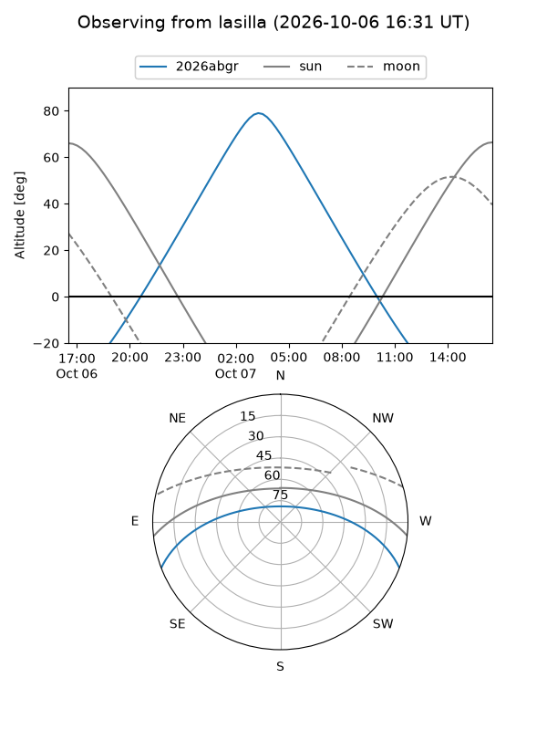
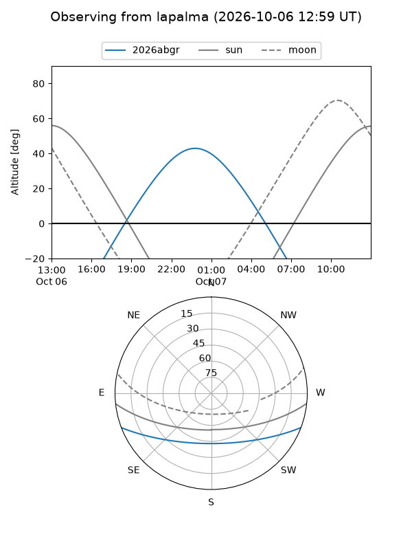
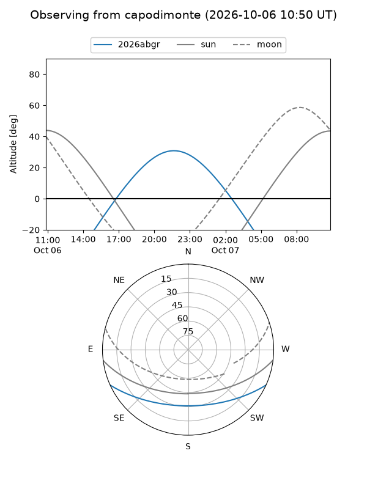
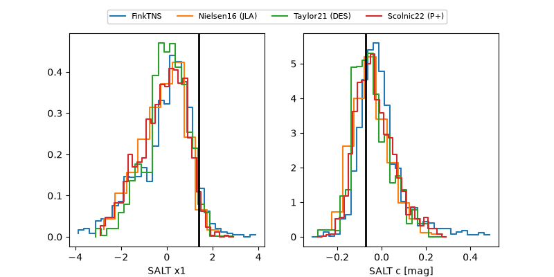

2026abgr
Target 2026abgr at 2026-10-06 23:03
Aliases and brokers:
FINK-ZTF: ztf.fink-portal.org/ZTF26abszebr
Lasair-ZTF: lasair-ztf.lsst.ac.uk/objects/ZTF26abszebr
ALeRCE-ZTF: alerce.online/object/ZTF26abszebr
YSE-PZ: ziggy.ucolick.org/yse/transient_detail/2026abgr
TNS name: wis-tns.org/object/2026abgr
Direct TNS query: direct search
alt names
ZTF26abszebr (ztf,fink_ztf)
2026abgr (tns,yse)
ATLAS26lld (atlas)
PS26jbd (panstarrs)
Coordinates:
equatorial (ra, dec) = 354.2105,-18.43114
equatorial (HMS+DMS) = 23:36:50.51,-18:25:52.12
galactic (l, b) = (55.8881,-70.76405)
Flags:
TNS type: nan
peak dt: +15.0
Photometry:
last atlasc=19.47, atlaso=19.33, ztfg=19.71, ztfr=19.33
1 atlasc, 1 atlaso, 10 ztfg, 12 ztfr detections
Lightcurve
Visibility



Additional plots
